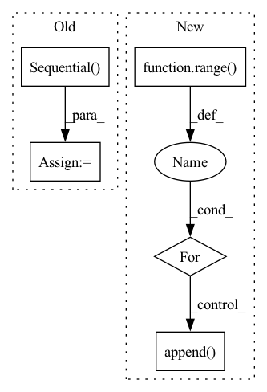

Pattern ID :29567
Before Change
self.cat_embedding.append(
nn.Embedding(cat, embed_dim)
)
self.fc = nn.Sequential( nn.Linear(out_features=embed_dim, in_features=1),
nn.ReLU()
)
self.num_embedding = clones(self.fc, no_num)
self.no_num = no_num
self.no_cat = no_catAfter Change
)
self.num_embedding = nn.ModuleList()
for i in range( no_num):
self.num_embedding.append(
NumericalEmbedding(embed_dim)
)
self.no_num = no_num
self.no_cat = no_cat
In pattern: SUPERPATTERN
Frequency: 3
Non-data size: 5
Instances Fragment ID: 87699496
Project Name: ogunlao/saint
Commit Name: 35f005449ee9712d4ca6e12208a2948b803307a3
Time: 2021-06-18
Author: ogunlao@yahoo.com
File Name: models/embedding.py
M Class Name: Embedding
N Class Name: Embedding
M Method Name: __init__(5)
N Method Name: __init__(5)
M Parent Class: nn.Module
N Parent Class: nn.Module
M File Name: models/embedding.py
N File Name: models/embedding.py
M Start Line: 54
M End Line: 59
N Start Line: 71
N End Line: 77
Before Change
self.deform_fc_channels = deform_fc_channels
if not no_trans:
self.offset_fc = nn.Sequential(
nn.Linear(self.out_size * self.out_size * self.out_channels,
self.deform_fc_channels),
nn.ReLU(inplace=True),
nn.Linear(self.deform_fc_channels, self.deform_fc_channels),
nn.ReLU(inplace=True),
nn.Linear(self.deform_fc_channels,
self.out_size * self.out_size * 2))
self.offset_fc[-1].weight.data.zero_()
self.offset_fc[-1].bias.data.zero_()
def forward(self, data, rois):After Change
if not no_trans:
seq = []
ic = self.out_size * self.out_size * self.out_channels
for i in range( self.num_offset_fcs):
if i < self.num_offset_fcs - 1:
oc = self.deform_fc_channels
else:
oc = self.out_size * self.out_size * 2
seq.append( nn.Linear(ic, oc))
ic = oc
if i < self.num_offset_fcs - 1:
seq.append(nn.ReLU(inplace=True))
self.offset_fc = nn.Sequential(*seq) Fragment ID: 87699513
Project Name: wxinlong/solo
Commit Name: 5fcec9ae4df1ecea8fe2a35d9635a3b081e297f7
Time: 2019-04-06
Author: chenkaidev@gmail.com
File Name: mmdet/ops/dcn/modules/deform_pool.py
M Class Name: DeformRoIPoolingPack
N Class Name: DeformRoIPoolingPack
M Method Name: __init__(11)
N Method Name: __init__(10)
M Parent Class: DeformRoIPooling
N Parent Class: DeformRoIPooling
M File Name: mmdet/ops/dcn/modules/deform_pool.py
N File Name: mmdet/ops/dcn/modules/deform_pool.py
M Start Line: 52
M End Line: 62
N Start Line: 47
N End Line: 68
Before Change
self.alibi = AlibiPositionalBias(heads = heads)
self.to_q = nn.Sequential(
nn.Conv1d(dim, inner_dim, 1, bias = False),
nn.Conv1d(inner_dim, inner_dim, 3, bias = False, groups = inner_dim)
)
self.to_k = nn.Sequential(
nn.Conv1d(dim, inner_dim, 1, bias = False),
nn.Conv1d(inner_dim, inner_dim, 3, bias = False, groups = inner_dim)After Change
self.qkv_ds_convs = nn.ModuleList([])
for _ in range( 3): // for queries, keys, values
ds_convs = nn.ModuleList([])
for kernel_size in ds_conv_kernel_sizes:
if kernel_size == 0:
ds_convs.append( nn.Identity())
continue
ds_convs.append(CausalDepthwiseConv1d(inner_dim, kernel_size))
Fragment ID: 87699519
Project Name: lucidrains/tranception-pytorch
Commit Name: b2eaf893294394093839a66effb621645d54cd6c
Time: 2022-06-12
Author: lucidrains@gmail.com
File Name: tranception_pytorch/tranception_pytorch.py
M Class Name: CausalAttention
N Class Name: CausalAttention
M Method Name: __init__(1)
N Method Name: __init__(1)
M Parent Class: nn.Module
N Parent Class: nn.Module
M File Name: tranception_pytorch/tranception_pytorch.py
N File Name: tranception_pytorch/tranception_pytorch.py
M Start Line: 90
M End Line: 109
N Start Line: 99
N End Line: 127